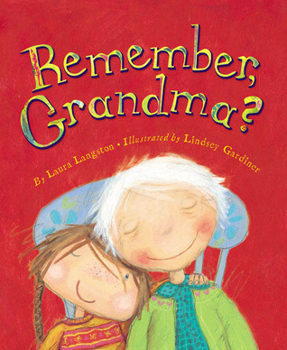

Remember, Grandma
By Laura Langsto
Dad says that on day Grandma's remembering will go away forever. She will forget everything, even our names. He is wrong.
Margaret's grandma is the special kind. She wears sneakers with yellow laces and laughs very loud. They go for walks, sing songs together, and gather apples to make Grandma's special mile-high apple pie. But lately Grandma gets mixed up. More and more she can't remember. She forgets the way home and sometimes she doesn't even know Margaret. "She still loves you," says Margaret's mother, "even if she can't remember your name."
Warm and accessible, Remember, Grandma? is an important book that will strike a chord with many readers. For families who have a relative facing memory loss, it may trigger important conversations. And for all children with aging family members, it provides gentle reassurance about the love within families that endures even when memory does not.
Age Range: 5 - 6 years
Find out more:
here